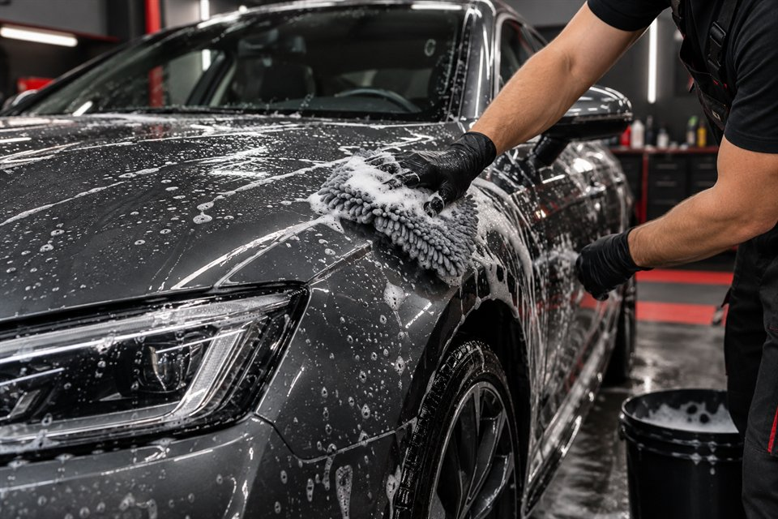
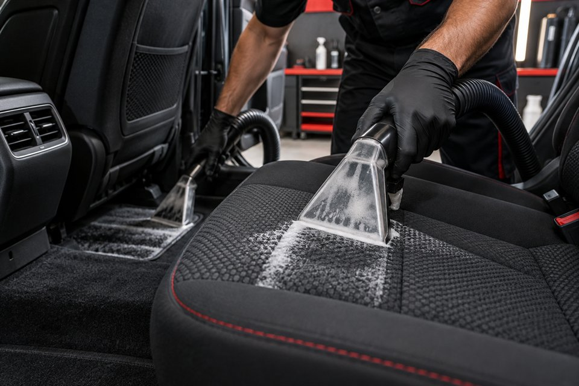
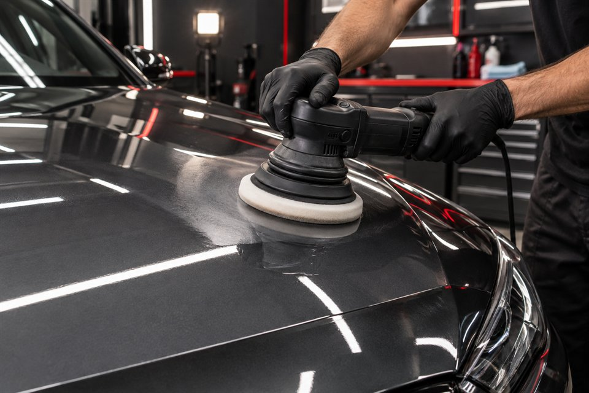
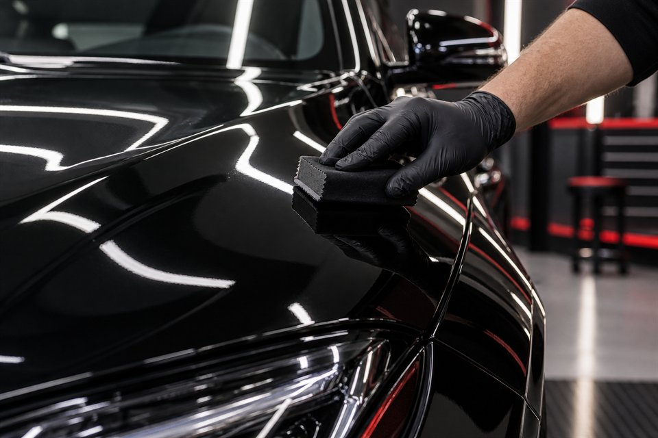
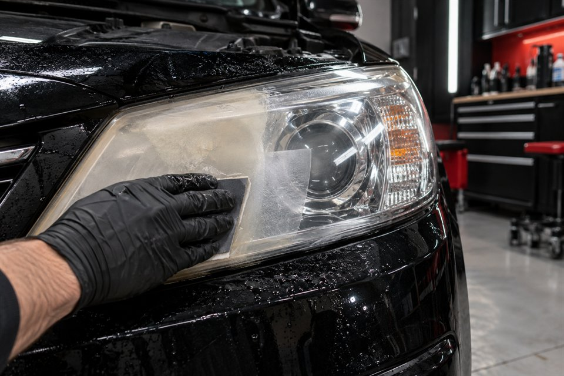
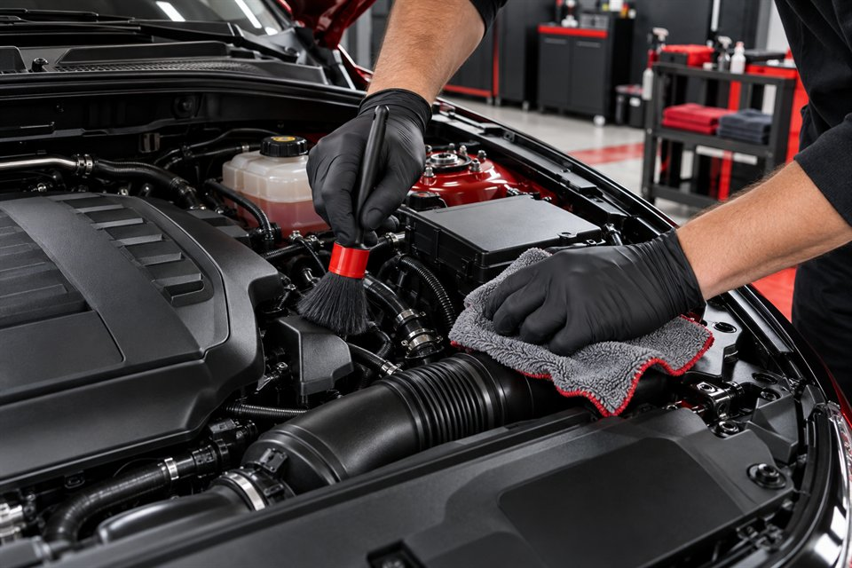
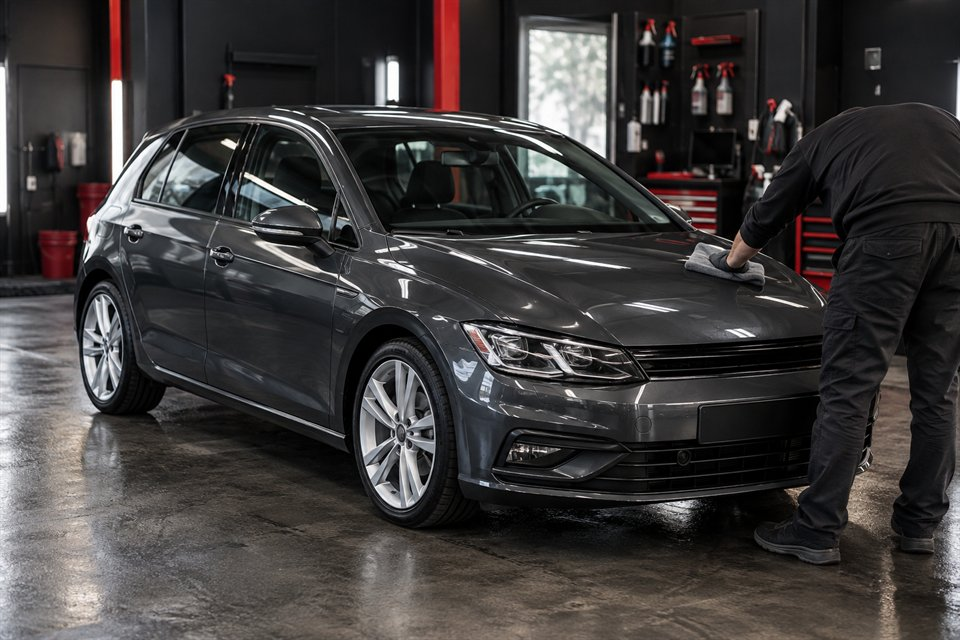
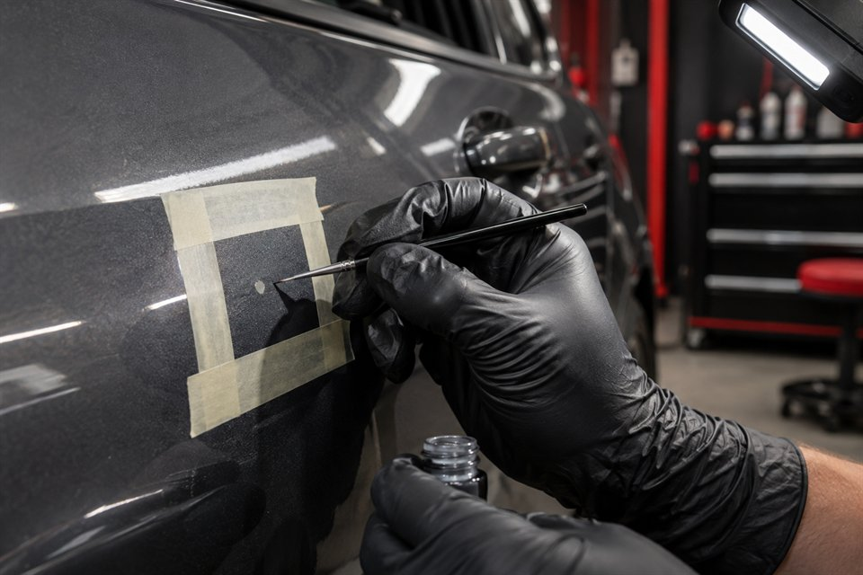
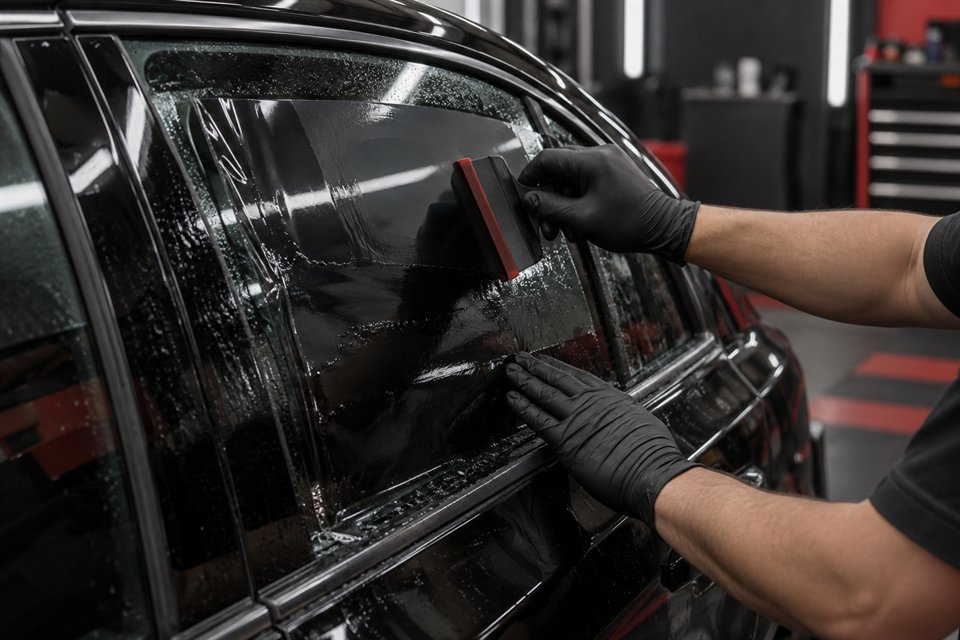

Contanos
Mandanos el modelo del vehículo, el servicio que buscás y, si podés, algunas fotos.
Lavadero, mantenimiento estético, pulidos, limpieza de tapizados, polarizados y tratamientos de protección para tu auto.
Detalle para tu auto
Desde una limpieza profunda hasta tratamientos de protección. Consultanos para definir el servicio más conveniente según el estado y el uso de tu vehículo.
Una limpieza minuciosa que va más allá de lo visible: trabajamos carrocería, llantas, emblemas y rincones de difícil acceso con atención a cada terminación. Buscamos devolverle al auto una presencia impecable, cuidando sus superficies durante todo el proceso.

El interior merece el mismo cuidado que la carrocería. Limpiamos alfombras, paneles, techo, plásticos y baúl para renovar la sensación de orden, higiene y confort. Ponemos especial atención en las zonas de uso diario y en los detalles que suelen pasar inadvertidos.

Trabajamos la pintura para realzar su brillo, recuperar profundidad de color y mejorar la claridad del acabado. El proceso se define según el estado de la carrocería: buscamos una superficie más pareja y luminosa, con reflejos que vuelvan a destacar las líneas del vehículo.

Después de preparar la superficie, aplicamos la protección adecuada para potenciar el acabado y facilitar su cuidado cotidiano. Cerámico o acrílico: la elección depende de la pintura, el uso del auto y tus expectativas. Te explicamos qué aporta cada alternativa antes de realizar el trabajo.

Las ópticas opacas o amarillentas cambian por completo la expresión del auto. Mediante un proceso de lijado y tratamiento, buscamos recuperar transparencia y mejorar su apariencia. Una intervención precisa que puede favorecer la proyección de luz, según el estado de cada lente.

Los asientos concentran el uso diario y merecen un tratamiento específico. Trabajamos telas, cuero o alcántara con el método apropiado para cada material, orientado a reducir suciedad, manchas y olores. El objetivo es recuperar una presentación agradable sin descuidar la textura ni la integridad del tapizado.
Una puesta a punto integral para que el auto se vea y se sienta mejor. Atendemos exterior e interior, cuidando pintura, vidrios, plásticos, ruedas y terminaciones. Es una opción práctica para recuperar frescura y prolijidad en el uso cotidiano, con el criterio de trabajo de un taller de detail.
El vano motor también forma parte de la presentación del vehículo. Removemos grasa, tierra, polvo y residuos con atención a los componentes, para lograr un aspecto más ordenado. La limpieza estética además facilita observar visualmente el estado general de la zona, sin reemplazar una revisión mecánica.

La primera impresión cuenta cuando un auto sale a la venta. Combinamos las tareas estéticas que más ayudan a mejorar su presentación: limpieza interior, cuidado de carrocería y detalles visibles, según su estado. Lo preparamos para que luzca mejor en fotos y durante las visitas de posibles compradores.

Pequeños rayones, marcas y detalles puntuales pueden restarle presencia a todo el vehículo. Evaluamos el daño y, cuando la superficie lo permite, realizamos una corrección localizada. Buscamos atenuar la imperfección con un trabajo preciso, sin prometer que cada marca pueda desaparecer por completo.

Una instalación cuidada de láminas transforma el aspecto de los vidrios y suma privacidad al habitáculo. Según el producto elegido, también puede contribuir a reducir el ingreso de radiación solar y mejorar el confort. Te orientamos sobre alternativas y tonos antes de definir el trabajo.

La recomendación final y el presupuesto se realizan después de conocer el vehículo y el resultado buscado.
Nuestros trabajos
Podés ver algunos de nuestros trabajos realizados en nuestras redes sociales. Hoy compartimos novedades y resultados en Instagram; la página de Facebook está en preparación.
Próxima etapa
Queremos incorporar productos Toxic Shine para el cuidado de tu auto. El catálogo, la disponibilidad y la forma de compra todavía están por definir.
Cómo trabajamos
Coordinamos todo por WhatsApp para entender qué necesita tu auto antes de reservar el turno.
Mandanos el modelo del vehículo, el servicio que buscás y, si podés, algunas fotos.
Revisamos la información y te indicamos el tratamiento más adecuado.
Coordinamos disponibilidad, condiciones del trabajo y turno.
Contanos qué querés mejorar y, si podés, envianos algunas fotos de tu vehículo. Con esa información podemos orientarte sobre las opciones más convenientes y preparar una propuesta acorde a lo que necesita tu auto.